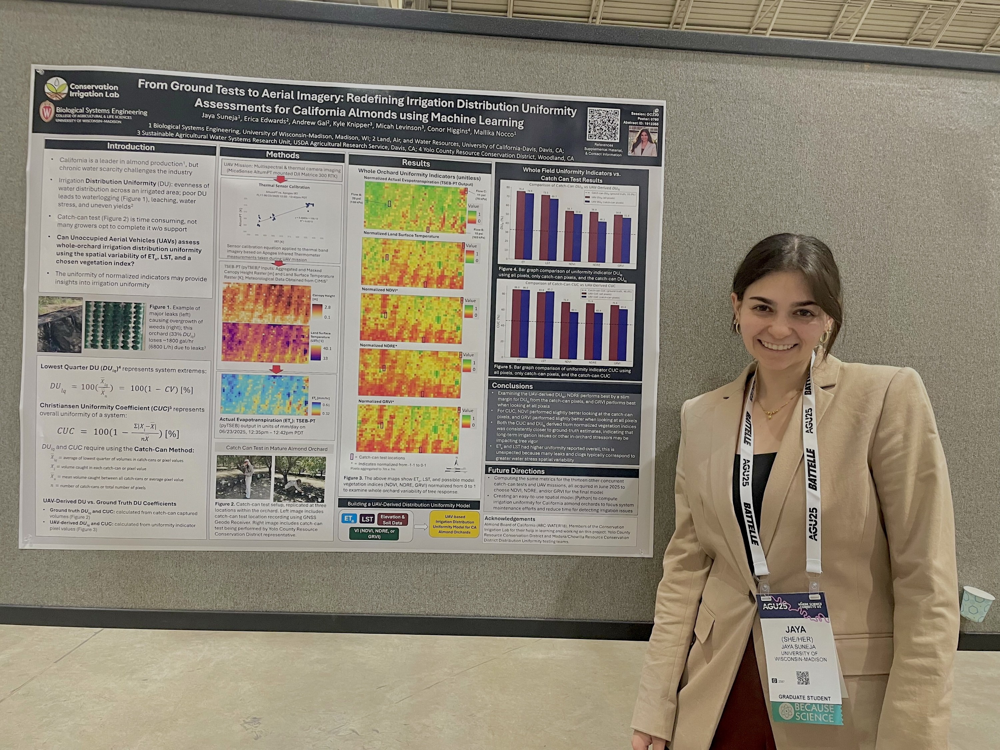
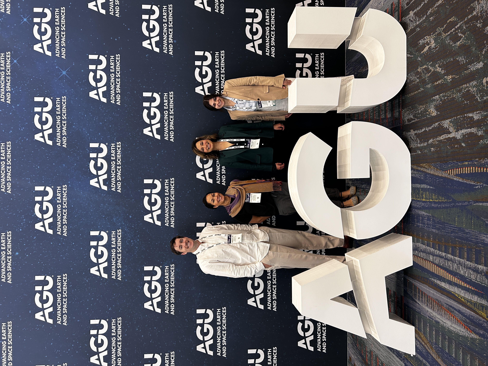

December 2025 | New Orleans, Louisiana
American Geophysical Union (AGU) Annual Meeting
From Ground Tests to Aerial Imagery: Redefining Irrigation Distribution Uniformity Assessments for California Almonds
Presented research exploring UAV-based remote sensing methods for assessing irrigation distribution uniformity in California almond orchards, with an emphasis on connecting field measurements and aerial imagery.

